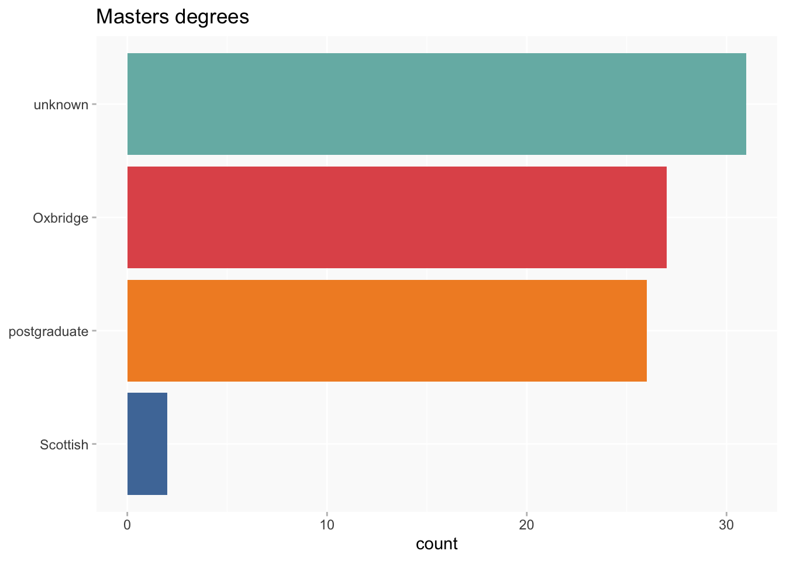
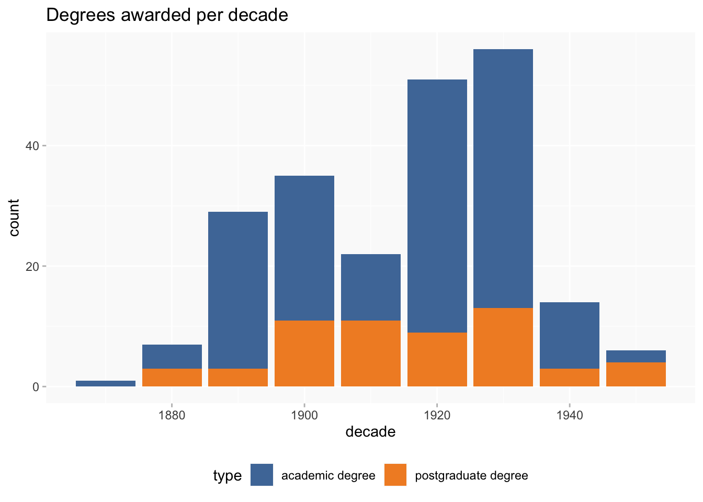
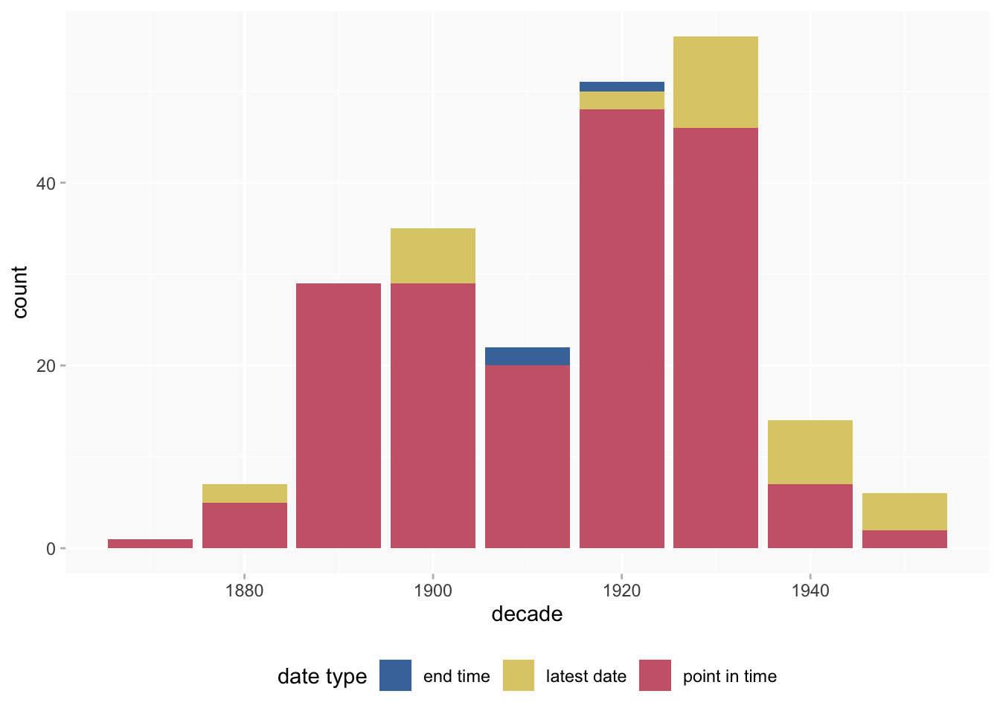
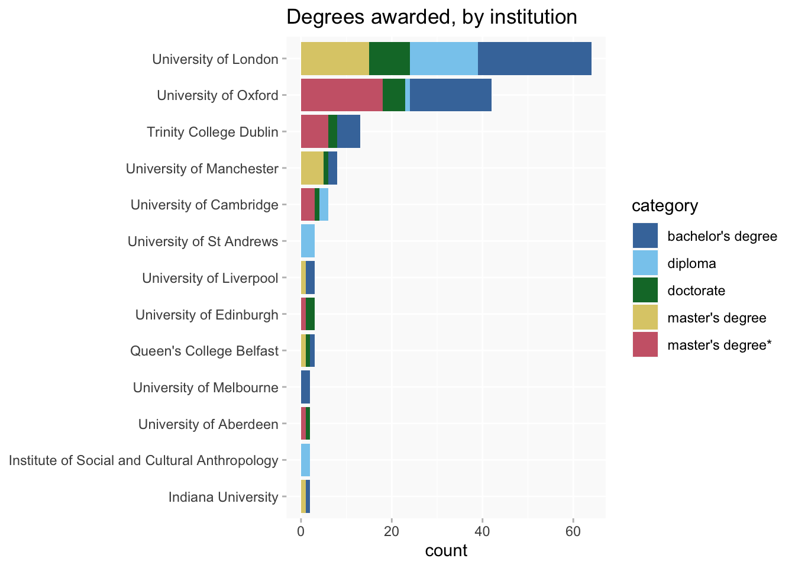
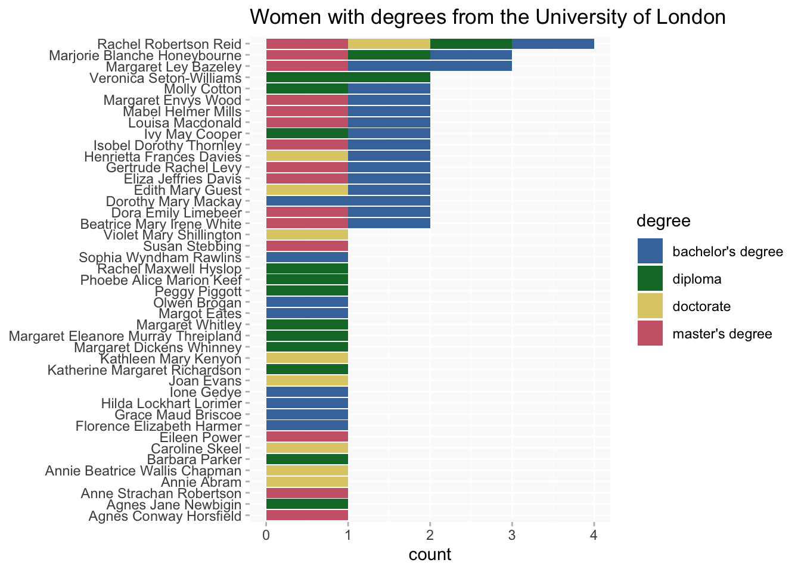

Academic degrees (P59)
education
BN women’s academic qualifications: what kind, when and where from?
142 women in the BN database are recorded as having at least one academic qualification.
Wikibase query
What kinds of degree?
Non-postgraduate Masters degrees from Oxbridge, TCD and Scottish universities, as well as unknown (notes below) are asterisked.
handling “masters” degrees
Breakdown of types by conferring institutions.
- “Oxbridge” includes TCD (for convenience in labelling)
- Scottish masters (ie: Edinburgh, Glasgow, St Andrews, Aberdeen) are handled separately
- note on Scottish terminology: “ordinary” = 3 year degree and “honours” = 4 year (latter is nowadays the norm, but not necessarily so in BN period), but sources won’t always make the distinction
- It’s then assumed that a masters conferred by any other known institution is a “proper” postgraduate qualification. (About 2/3 are from the university of London.)
However, there are (still) a lot of unknowns! (They can be found in the table by filtering degree by “master” and sorting conferred to bring blanks to the top.)
Thinking about ways to reduce unknowns, on a more probabilistic basis…
- other qualifications: a few women with unknown MAs have a U of London BA (Q1101 Q1423 Q1439), which makes it extremely unlikely (though from what I’ve read not impossible) that they would have an Oxbridge/TCD MA. I think it would be reasonable to add them to the postgrad masters category.

When?
Dates include both precise (point in time) dates and “latest” dates; it’s unclear exactly how imprecise the latter are. Comparison of academic degree and educated at (even allowing for the often loose fit between the two categories) suggests it may sometimes be very imprecise, and where the source is eg SAL Blue Papers could well be many years later.

Update: Now there are more precise dates filled in; latest date still clusters a bit towards the end, but nowhere near as much as it did.

Update: About 3/4 of degrees now have a point in time date, and the pattern is much closer to the overall.

From where?
All women
(Restricted to institutions that awarded at least two degrees to make it more manageable.)

University of London
(UoL is really the only institution with enough degree holders for this chart to work.)

FSAs
The full set has too many titles and colours for this treemap to work (which might be improved but that would take more time than I have at the moment), but I think the FSA-only subset makes a nice comparison with educated at.
Multiple degrees